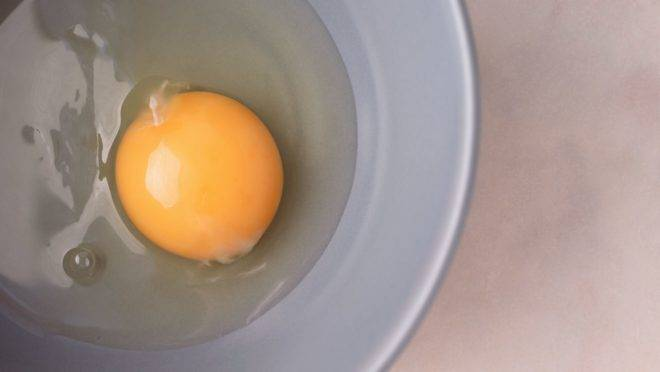

Ovo: benefícios, propriedades, como e quanto consumir
Ele já foi considerado vilão, mas hoje é um alimento muito recomendado pelos nutricionistas. O ovo é um alimento de origem animal rico em p roteínas, vitaminas e mineiras. Fonte de gorduras boas e de alto valor biológico, o ingrediente pode ser benéfico para a saúde e tem como uma de suas principais características sua versatilidade: pode ser preparado de diversas maneiras e entrar em pratos de todos os gostos para auxiliar na dieta. A alta quantidade de proteínas é um dos fatores que fazem o ovo estar presente em muitos planos alimentares para o auxílio da hipertrofia, mas seus benefícios vão muito além disso. O alimento pode ajudar no emagrecimento e até na prevenção de doenças.
Benefícios do ovo
O ovo contém diversos benefícios para o organismo, como garantir o funcionamento das células nervosas que ajudam na memória, além de produzir energia para o corpo e manter o sistema imunológico saudável. O alimento contém um nutriente essencial que faz parte do complexo de vitaminas B, a colina, que é fundamental na quebra do aminoácido homocisteína, associado ao desenvolvimento de doenças cardíacas. Por isso, o ovo pode ter papel fundamental na diminuição do risco de problemas no coração. Por conter vitamina A, luteína e zeaxantina, o ingrediente pode ajudar a prevenir a degeneração macular dos olhos – principal causa de catarata relacionada à idade – e a retinose pigmentar.
O ovo é composto por duas partes, a clara e a gema, com características nutricionais bastante diferentes entre si. A primeira é rica em proteína – daí muita gente a utilizar separada da gema para fazer omeletes proteicos, por exemplo. A segunda concentra vitaminas e minerais. Um ovo cozido possui, em média, seis gramas de proteína, originários justamente da clara, região rica em albumina, proteína que possui alto valor biológico. Ou seja, é facilmente absorvida pelo organismo e auxilia diretamente na construção da massa muscular.
Afirma a Dra. Esthela Conde, médica pós- graduada em nutrologia e medicina integrativa. Já a gema é onde estão localizadas vitaminas importantes para o bom funcionamento do organismo, como zinco, selênio, fosforo e vitamina A, além da colina, importante para o cérebro, coração e músculos.
explica Esthela Conde.
Voltar ☚